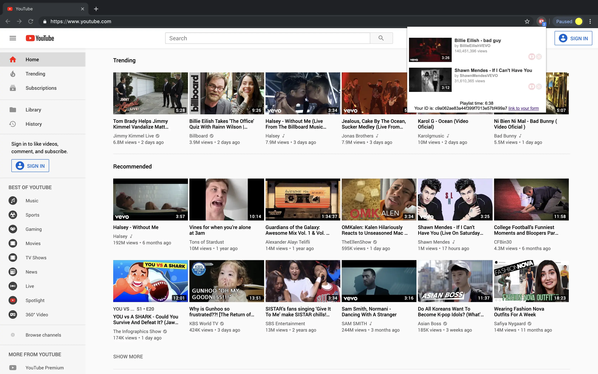
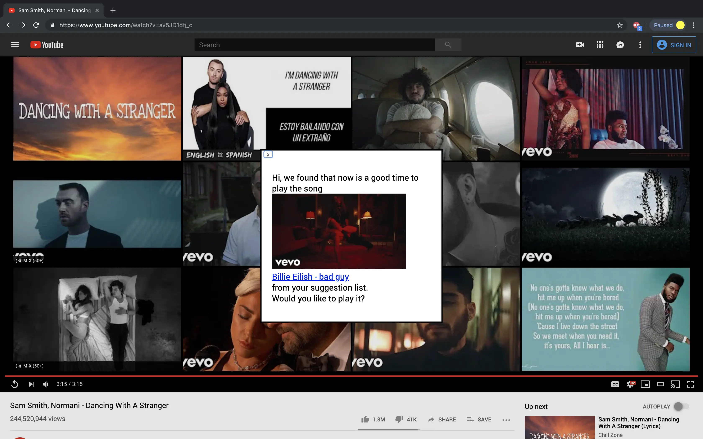

A Chrome extension that lets the users create the "Up Next" feature on YouTube with handpicked songs from their friends. Below are screenshots and usage data from 13 participants.

Tossaporn Saengja back
DeWolfe Payment App
A universal payments platform which allows users holding any
cryptocurrency to make direct purchases at real-world merchants.
A Song for Me: A Music Sharing Tool
A Chrome extension that lets the users create the "Up Next" feature on
YouTube with handpicked songs from their friends. Below are screenshots
and usage data from 13 participants.


Network Wrangler
An interactive network data processing and visualization tool.